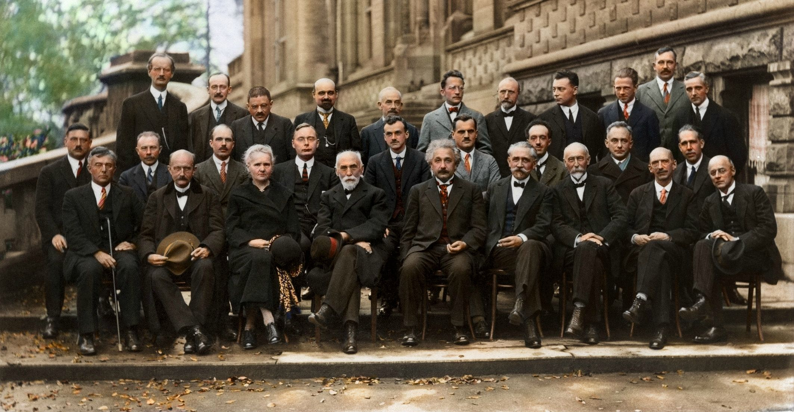

Шаблон отчёта по лабораторной работе
Простейший вариант
![]()
Цель работы
Здесь приводится формулировка цели лабораторной работы. Формулировки цели для каждой лабораторной работы приведены в методических указаниях.
Цель данного шаблона — максимально упростить подготовку отчётов по лабораторным работам. Модифицируя данный шаблон, студенты смогут без труда подготовить отчёт по лабораторным работам, а также познакомиться с основными возможностями разметки Markdown.
Задание
Здесь приводится описание задания в соответствии с рекомендациями методического пособия и выданным вариантом.
Теоретическое введение
Здесь описываются теоретические аспекты, связанные с выполнением работы.
Например, в табл. 1 приведено краткое описание стандартных каталогов Unix.
| Имя каталога | Описание каталога |
|---|---|
/ |
Корневая директория, содержащая всю файловую |
/bin |
Основные системные утилиты, необходимые как в однопользовательском режиме, так и при обычной работе всем пользователям |
/etc |
Общесистемные конфигурационные файлы и файлы конфигурации установленных программ |
/home |
Содержит домашние директории пользователей, которые, в свою очередь, содержат персональные настройки и данные пользователя |
/media |
Точки монтирования для сменных носителей |
/root |
Домашняя директория пользователя root |
/tmp |
Временные файлы |
/usr |
Вторичная иерархия для данных пользователя |
Более подробно про Unix см. в [@tanenbaum_book_modern-os_ru; @robbins_book_bash_en; @zarrelli_book_mastering-bash_en; @newham_book_learning-bash_en].
Выполнение лабораторной работы
Описываются проведённые действия, в качестве иллюстрации даётся ссылка на иллюстрацию (рис. 1).

Выводы
Здесь кратко описываются итоги проделанной работы.